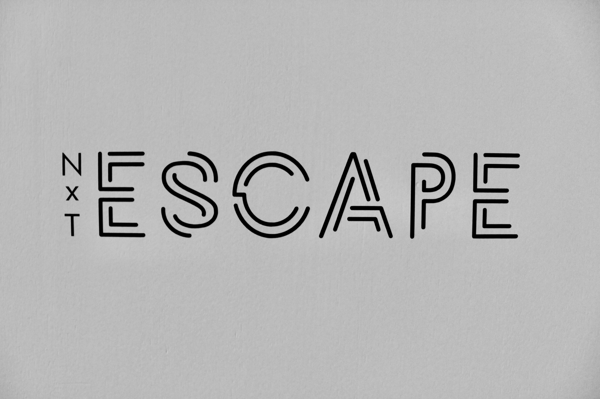
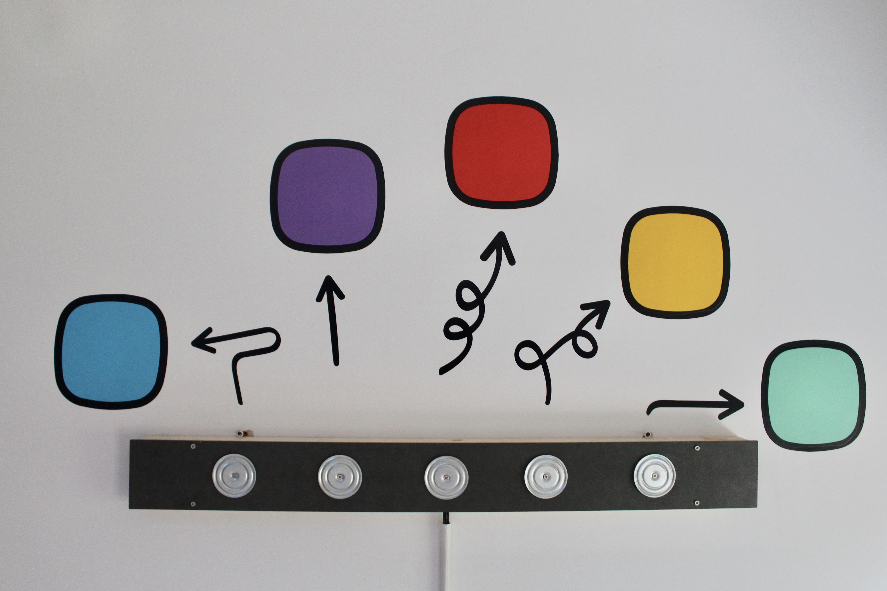
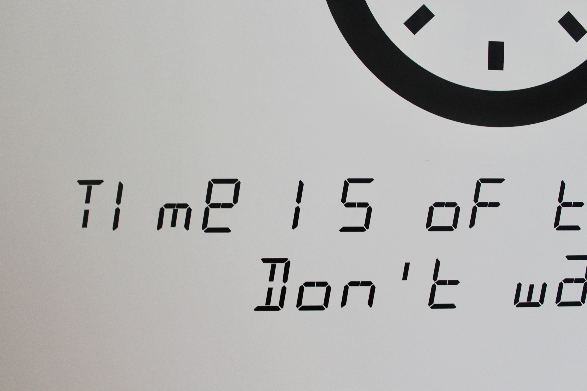
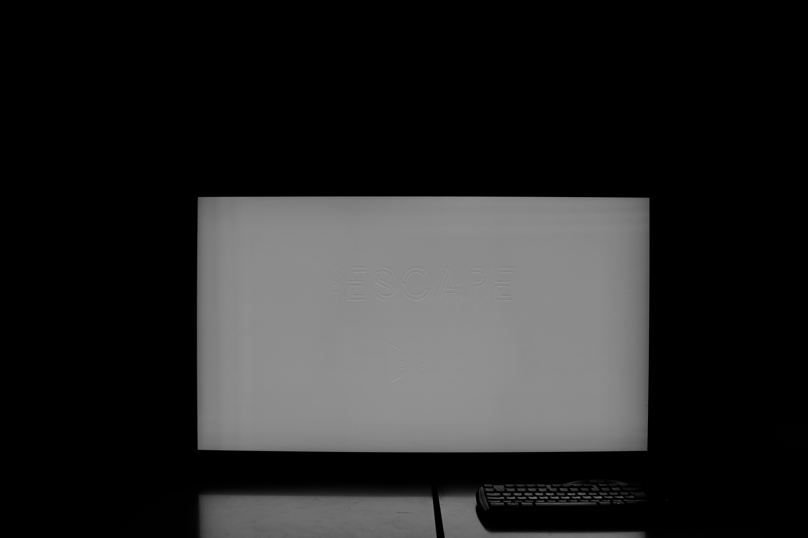
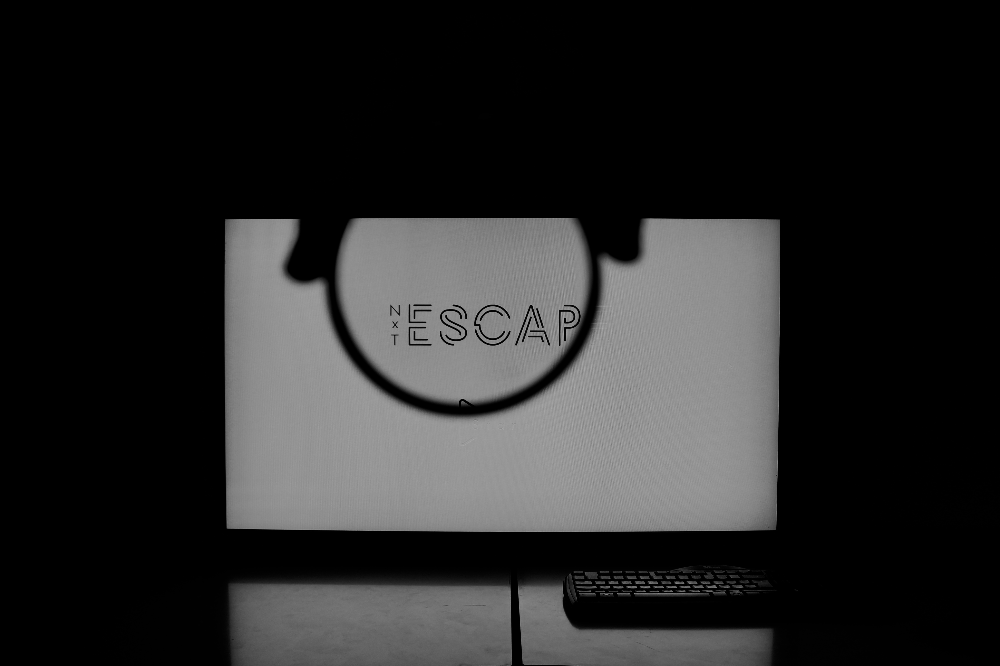
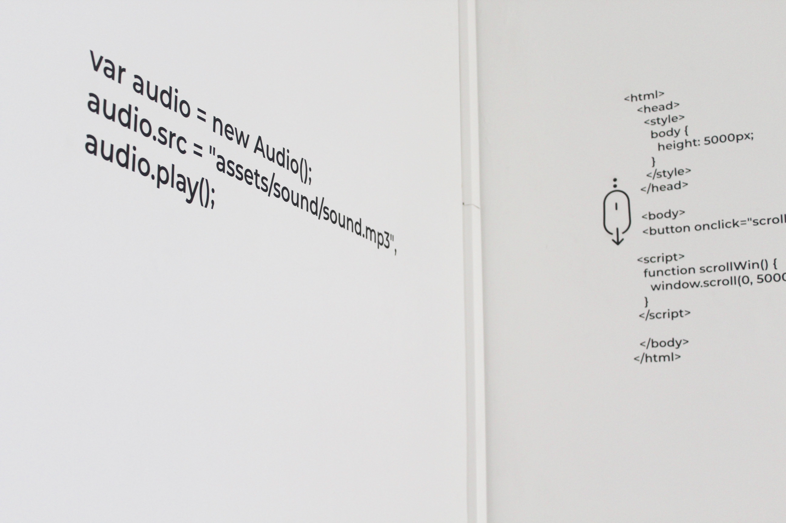
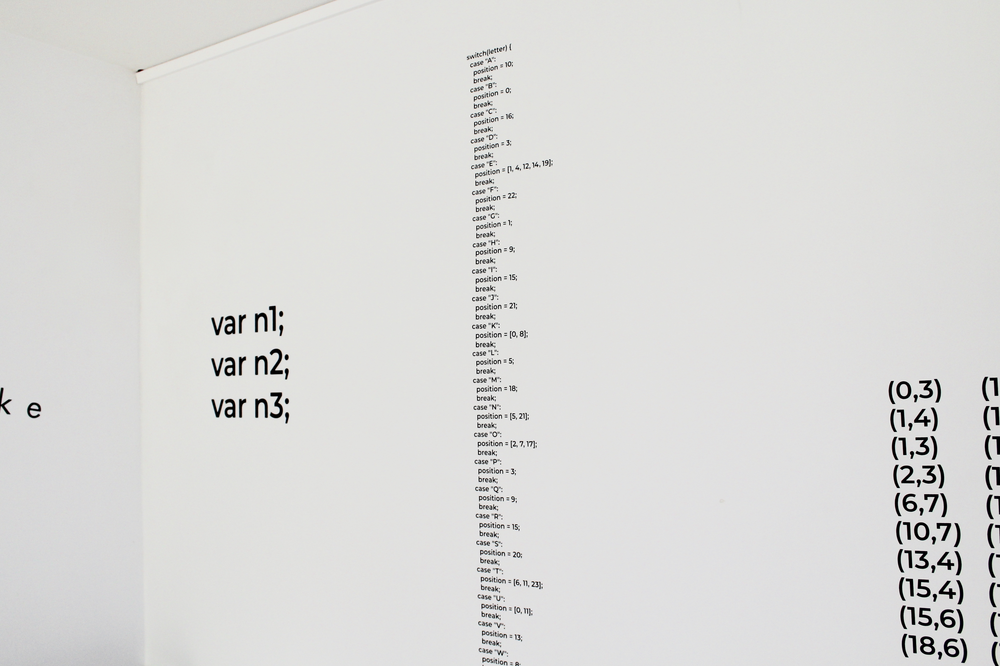

<div class="body l-wrap">
  <div class="container">
    <h1 class="container__title">Nxt Escape</h1>

    
    <p>
      Concept
      NxT Escape is een escape room die ontwikkeld werd als eindwerk voor studenten die geïnteresseerd zijn in of meer
      voeling willen krijgen met de richting NxT Media Technology. Aan de hand van een applicatie, puzzels en raadsels
      die geïnspireerd zijn op het nieuwe curriculum kunnen de studenten proeven van de verschillende aspecten van de
      richting NxT Media Technology. Doorheen de escape room worden visueel ook duidelijk de leerlijnen van deze
      studierichting weergegeven om het concept kracht bij te staan.
    </p>
    
    
    <p>
      Doelgroep
      De doelgroep van NxT Escape zijn voornamelijk studenten die geïnteresseerd zijn in de richting NxT Media
      Technology en op een leuke en speelse manier willen proeven van de richting NxT Media Technology. Terwijl
      potentiële studenten de originele doelgroep zijn van onze escape room, hebben we bij het testen van NxT Escape
      gebruik gemaakt van een veel breder publiek van kinderen, volwassenen, gepensioneerden, docenten en gemengde
      groepen.
    </p>
    
    <p>
      Duur: 60 minuten
      Waarvan tijdens de eerste 45 minuten, deel 1 van de escape room wordt gespeeld. Enkel bij het voltooien van deel 1
      binnen de eerste 45 minuten kan ook deel 2 gespeeld worden gedurende de laatste 15 minuten en de resterende tijd
      van deel 1.
    </p>
    <p>
      Aantal personen: 6 tot 9 personen
      De zes personen worden opgedeeld in groepen van twee en verdeeld over de drie verschillende kamers. De escaperoom
      kan ook met 9 gespeeld worden, dan worden er per kamer 3 personen geplaatst.
    </p>
    <p>
      Communicatie
      In elke kamer hebben de spelers een gsm die door middel van een skype call in verbinding staat met de twee andere
      kamers. Via deze skype call luisteren ook de organisatoren mee voor het verlenen van eventuele tips.
    </p>
    
    
    <p>
      Broadcasting Room
      In deze kamer ligt de gsm verstopt met de applicatie die dient als rode draad doorheen de escape room. De
      applicatie zal woorden laten zien en op deze manier het Pianospel in actie zetten. Slagen de deelnemers er in de
      puzzel op te lossen, dan zullen ze een artiest kunnen ingeven in de applicatie op de gsm en zo hun stuk van de
      code van hun vrijspelen.
    </p>
    
    
    <p>
      Developer Room
      In deze kamer staat een groot scherm dat enkel kan bekeken worden met speciale brillen en vier kistjes die
      gesloten zijn met een hangslot. Slagen de deelnemers erin, zich een weg door de site op het groot scherm te
      ‘hacken’ dan zullen ze ook hun deel van de code vinden.
    </p>
    
    
    <p>
      Creative Room
      In de Creative room is de puzzel die opgelost moet worden een grote versie van het spel Elektro. Na de puzzel te
      hebben opgelost zullen de deelnemers een code vinden waarmee ze een kistje kunnen openen dat verstopt is in de
      kamer. In dat kistje bevindt zich een blacklight zaklamp waarmee ze hun deel van de code kunnen vinden.
    </p>
    
  </div>
</div>
